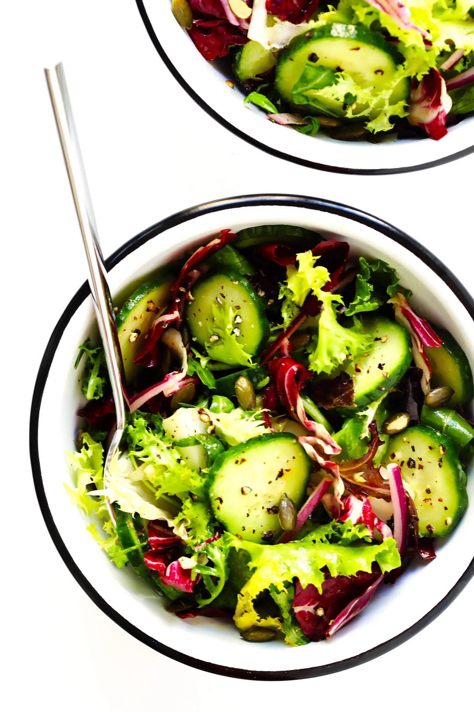

Everyday Salad

Not everyone has time to cook, luckily this salad takes no time to make!
Ingredients:
- Fresh Greens
- Cucumber
- Red Onion
- Nuts/Seeds
- Everyday Dressing (For the recipe, look below)
Everyday Dressing Recipe:
Mix these ingredients:
- Olive Oil
- Lemon Juice
- Dijon Mustard
- Garlic
- Salt and Black Pepper
You can optionally add some of these, whatever is in your fridge!
- A Protein: You can add anything like Chicken, Fish, Steak, Pork, Shrimp or even tofu.
- A Cheese: A hard cheese like paremesan or a soft cheese like feta, whatever you have on hand!
- Any Other Fresh Vegetable: Instead of (or in addition to) the cucumber, you can add fresh veggies like Bell Peppers, Carrots, Radishes, Celery, or even Corn!
- Any Jarred Veggies or Olives: In addition, you can add jarred veggies or olives, such as roasted peppers, marinated artichockes, banana peppers, jalapeños, or olives.